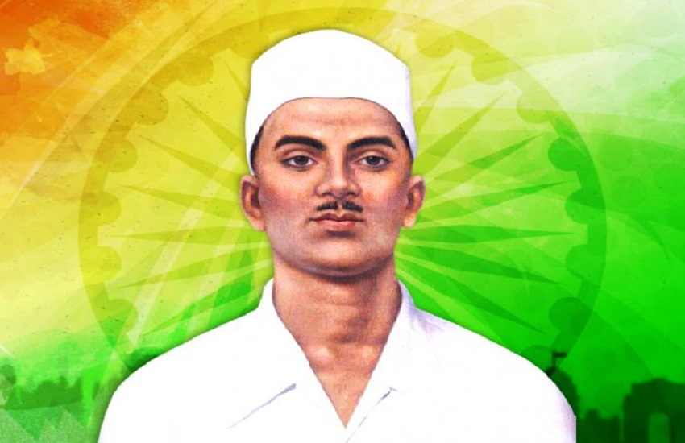

Sukhdev

Born: 15 May 1907, Ludhiana
Died: 23 March 1931, Lahore, Pakistan
Education: National College of Arts, National College, Lahore
Member of: Hindustan Socialist Republican Association (HSRA)
Sukhdev, who was born in 1907, was a brave revolutionary and a key member of the Hindustan
Socialist Republican Association. Without a doubt, he was one of the most revered figures of
the Indian freedom struggle. He collaborated closely with his colleagues Bhagat Singh and
Shivram Rajguru. He was accused of being involved in the assassination of British officer John
Saunders. Unfortunately, at the age of 24, he was caught and hanged with Bhagat Singh and
Shivaram Rajguru on March 23, 1931, in Punjab's Hussainwala (now in Pakistan).
Sukhdev was born to Ramlal and Ralli Devi Thapar in Ludhiana, Punjab.
He showed a defiant spirit from an early age itself. During his school days, he would
refuse to salute the British officers who visited his school.
Having lost his father at an early age, Sukhdev was raised by his uncle. It was the arrest of his
uncle that led him to revolutionary activities for freedom from colonial rule.
Sukhdev joined the Naujawan Bharat Seva, which had been started by Bhagat Singh in 1926.
The two became close friends and associates.
He participated in many activities to promote national consciousness among the country's
young people in the Punjab area.
He was also an active member of the Hindustan Socialist Republican Association (HSRA).
The HSRA was a radical organisation actively involved in revolutionary activities against the British government.
Sukhdev, while in college, studied the various revolutions of the world, particularly the Russian Revolution.
In an anti-Simon Commission rally in 1928, veteran Congress leader Lala Lajpat Rai was cruelly beaten by a lathi
by a British police officer named James A Scott. Lajpat Rai succumbed to injuries sustained a few days later.
The young revolutionaries including Sukhdev decided to avenge Lajpat Rai's death. As per Bhagat Singh's biographer,
it was Sukhdev who chose Bhagat Singh to assassinate Scott.
However, on 17th December 1928, Bhagat Singh and his accomplices Sukhdev and Rajguru killed an Assistant
Superintendent of Police, John P. Saunders in a case of mistaken identity.
They still declared that Lajpat Rai’s death had been avenged. After committing the act, the trio escaped.
They fled from Lahore by rail to Lucknow. Rajguru went on to Benares from Lucknow. He returned to Lahore a few days later.
The British government managed to capture all the people involved in the assassination. Rajguru was arrested
while he was in a bomb factory in Lahore in March 1929. All three were sentenced to death by hanging in the trial that ensued.
While lodged in prison, Rajguru and his friends went on a hunger strike demanding improved conditions for political prisoners.